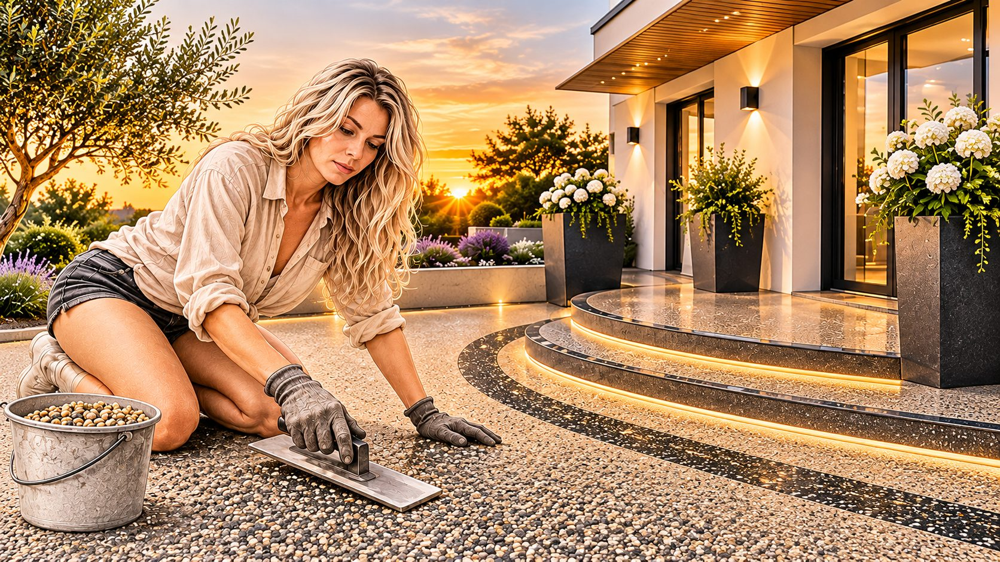

Une solution créative.
Un style qui vous ressemble.
Moquette de pierre, dedans comme dehors
Granulats de marbre et résine pour terrasses, allées, escaliers, abords de piscine et bien d’autres surfaces.
Terrasses
Un nouvel espace de vie, avec un revêtement décoratif adapté à votre extérieur.
En savoir plus ↗Allées
Des allées harmonieuses pour guider vos pas et valoriser votre propriété.
En savoir plus ↗Escaliers d'entrée
Une entrée mise en valeur grâce à des finitions élégantes et soignées.
En savoir plus ↗Abords de piscine
Un aménagement extérieur esthétique pour mettre en valeur votre espace piscine.
En savoir plus ↗Un sol beau, et pratique
- DrainanteL’eau de pluie traverse le revêtement : moins de flaques.
- AntidérapanteLe relief des granulats accroche sous le pied, même mouillé.
- Agréable pieds nusUne surface douce, appréciée autour des piscines.
- Sans jointsUn revêtement continu, qui suit les courbes et les marches.
- Sur l’existantAprès préparation, pose possible sur béton ou carrelage.
- Sur mesureLe choix du granulat donne la teinte et le style du revêtement.
De la visite à la livraison
- 1
Visite et conseil
On regarde ensemble la surface, l’état du support et vos envies. On choisit le granulat et la finition.
- 2
Préparation du support
Nettoyage, réparation des fissures et des défauts, pose des profils de finition sur les bords.
- 3
Mélange
Les granulats de marbre sont mélangés à la résine sur place, en quantité adaptée à la surface.
- 4
Application
Le mélange est étalé et lissé à la taloche, pour une surface régulière et sans joints.
- 5
Séchage et livraison
La résine durcit, la surface est prête. Le délai avant usage est précisé au devis selon la météo.
Dans le Nord et le Pas-de-Calais
J’interviens autour de ces villes. Vous êtes un peu plus loin ? Appelez, on en parle.
- Somain
- Douai
- Valenciennes
- Lille
- Arras
Voyez votre extérieur autrement
Envoyez une photo de votre terrasse ou de votre allée et choisissez un granulat : on prépare votre projet ensemble.